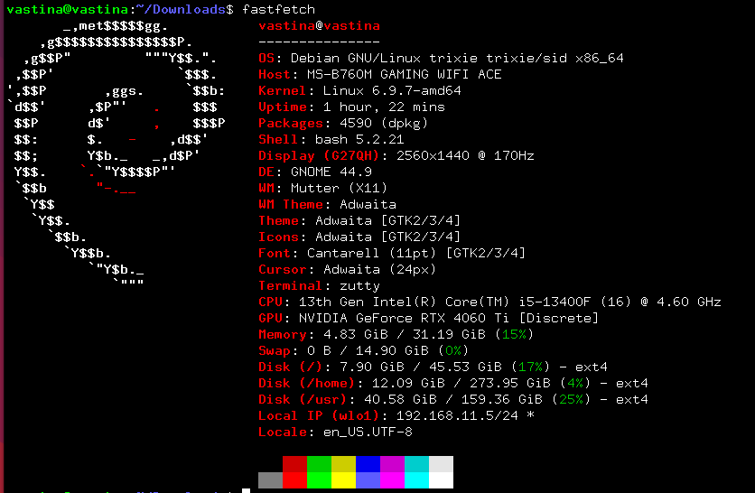

问题全部解决完，看着眼前流畅运行的debian想写点东西发现自己全程一张图都没有截/拍。全是文字，权当记录。不包括怎么装系统，以后也许会补充。
debian 官网提供的.iso 内核是6.1的，但是我打算切到 unstable，后面
sudo apt full-upgrade之后内核会升到6.9，为了等会防止进不去图形界面操作麻烦，先在6.1在NVIDIA-Linux-x86_64-<version>.run下载下来
记得把nouveau这个弱智给禁掉
sudo echo "blacklist nouveau” >> /etc/modprobe.d/blacklist.conf然后是装编译驱动的依赖
sudo apt install gcc g++ make
sudo apt install libprotobuf-dev libleveldb-dev libsnappy-dev libopencv-dev libhdf5-serial-dev protobuf-compiler
sudo apt install --no-install-recommends libboost-all-dev
sudo apt install libopenblas-dev liblapack-dev libatlas-base-dev libgflags-dev libgoogle-glog-dev liblmdb-dev为什么在还是6.1的内核上编译？准确来说，我不清楚，当时神志不清这么做了，记录下来
切到 unstable 的方法很简单，换一下 /etc/apt/sources.list
或者 /etc/apt/sources.list.d/debain.sources
的源就好了。这里我用的是清华源
deb https://mirrors.tuna.tsinghua.edu.cn/debian/ sid main contrib non-free non-free-firmware
# deb-src https://mirrors.tuna.tsinghua.edu.cn/debian/ sid main contrib non-free non-free-firmware然后就是 update upgrade
full-upgrade 三连了，记得进tty3什么的。
输入sudo reboot之后成功boot上了新的image，比较神奇的是打得开图形界面。简单把一些常用的软件和包安装了之后，想着来都来了，要不把cuda和cudnn也装一下吧。cuda安装过程很顺利，但是cudnn竟然没有debain12的版本（其实也不意外，ubuntu-24.04LTS和debian unstable
都一样，没有libtinfo5，但是去把bookworm/22.04LTS的拉下来也没有依赖问题）。然后我TM又干了一件蠢事，我把debian11版本给拉下来装了，到这一步问题还不是很严重，但是后面安装的时候它问我要不要重新装一遍nvidia-kernel，我一路yes过去然后就TM寄了。
这个时候我还没意识到问题，直到装完fcitx和搜狗打算重启一下。从重启开始已经不对劲了，开机花了整整3,4分钟，最后把登录界面给加载了一半出来，为什么是一半呢，因为只有鼠标和右上的设置，比较搞笑的是尝试进tty3进不去，还会把鼠标给杀了恢复不出来。再经过艰难的reboot后总算是进了recover mod。这个时候出了件很幽默的事，我打算重装驱动，然后NVIDIA-Linux-x86_64-<version>.run告诉我这是在一个实时内核（RT）上，输入uname -r一看，6.9.7-rt-amd64。这个时候我大概意识到了之前为什么升级到了unstable之后老是出问题，有的人是live cd领域大神，有的人在物理机上加载rt-image。找到问题了其实解决起来很简单，但是找到问题真不容易，之前我都是直接用apt拉装nvidia-driver，就没注意到这回事。把/boot里面
sudo rm *-rt-*然后reboot光速解决从上个月无意间发现清华debian镜像里一个叫sid的东西之后开始的战斗。
科学上网(clash-verge_1.6.4_amd64.AppImage)，配置git
ssh
desktop等，装点软件啥的。哪天写个脚本把这些自动干了吧，或者这个新装好的debian我应该能用挺久。最后附上fastfetch
